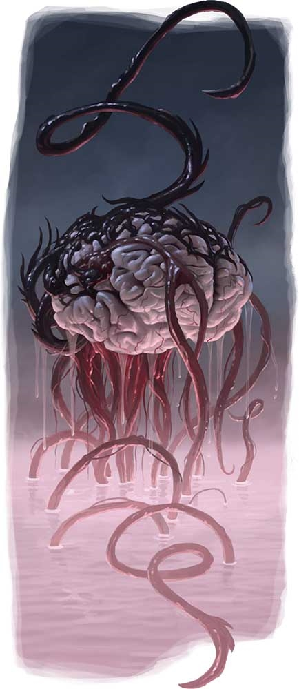

苏恩长老脑(Thoon
Elder Brain) CR 15
大型异怪
那个漂浮在空中的紫色球型团块看起来就像一个拖着触手的巨大脑子。你感受到它的心灵感应能力如同油腻的海浪一般冲刷过你的意识。

|
生命骰: |
12d8+120（174HP） |
|
先攻: |
+6 |
|
速度: |
10尺（2格），飞行20尺（完美），游泳30尺 |
|
防御等级: |
26（-1体型，+2敏捷，+15天生），接触11，措手不及24 |
|
基本攻击/擒抱: |
+9/+21 |
|
攻击: |
近战
触手+17 每击（1d6+8 附加2d6酸属性伤害） |
|
全力攻击: |
近战
8触手+17 每击（1d6+8 附加2d6酸属性伤害） |
|
面宽/触及: |
10尺/10尺 |
|
特殊攻击: |
酸爆、困惑领域、双重动作、心灵震爆、类法术能力 |
|
特殊能力: |
双重动作，快速治疗10，黑暗视觉60尺，SR
26，免疫酸和恐惧 |
|
豁免: |
强韧+14，反射+6，意志+14 |
|
属性: |
力量26，敏捷14，体质30，智力25，感知23，魅力23 |
|
技能: |
唬骗+21、专注+25、交涉+25、恐吓+23、知识（奥秘）+22、知识（宗教）+22、知识（位面）+22、聆听+6、潜行+21、法术辨识+24、侦察+6 |
|
专长: |
能力专攻（困惑领域）、战斗反射、精通先攻、感知精粹（Sense
Quintessence）、武器专攻（触手） |
|
地域: |
见后文 |
|
组织: |
见后文 |
|
挑战等级: |
15 |
|
宝物: |
双倍标准 |
|
阵营: |
通常中立邪恶
|
|
进化: |
13~19HD（大型），20~36（超大型） |
|
等级调整: |
― |
苏恩长老脑是被其在遥远国度的岁月所扭曲的存在，它们领导着苏恩夺心魔。
苏恩长老脑使用地底通用语，心灵感应1英里。
战斗:
苏恩长老脑适合被用作气氛最为激烈之时的遭遇――一个在战役的结尾出现的巨大而邪恶的怪物。当玩家面对苏恩长老脑时，他们应当已经跨越了成打的苏恩夺心魔和其它苏恩生物。苏恩长老脑的策略取决于它是否认为一个或多个敌人容易受到其能力的影响，如果是的话，那么它在每一个心灵活动的回合都会尝试命令一个对手转而攻击其盟友，若是此策略失败两次，那么苏恩长老脑就将放弃这套策略。
苏恩长老脑的战术也取决于敌人的数量，如果有多个近战的敌人威胁着它，那么它就将使用困惑领域能力来破坏敌人的战术，并利用触手来攻击那些没有被困惑领域影响的敌人。若是苏恩长老脑拥有盟友，或是仅仅面对少量敌人，那么它将会偏好于从安全距离以外使用心灵震爆来对付敌人，并且利用它的物理回合准备触手攻击来面对进入其触及范围的敌人。
双重动作（EX）：苏恩长老脑是由多股意识组成的生物，所有的这些意识都触碰到了遥远国度非现实之物。其可以进行两次先攻检定，其中较高者体现为其心灵活动的回合，较低者体现其物理活动的回合。这意味着苏恩长老脑在一轮内可以做比大多数生物更多的动作。例如，它可以在先攻17的位置使用心灵震爆（纯心灵活动），然后再先攻12的位置移动并使用其触手攻击。如果苏恩长老脑愿意，它也可以改变自己的先攻来准备动作或延迟并让另一部分（即先攻较低的物理活动回合）先行。
酸爆（EX）：苏恩长老脑的触手所附带的酸液将会在其进行攻击之后的一轮内灼烧其目标。苏恩长老脑的每个物理回合开始时，酸液都会对苏恩长老脑在前一轮中受到触手攻击的任何生物造成4d6点酸伤害，
但是无论苏恩长老脑击中该生物多少次，伤害总是4d6点。
困惑领域（SU）：苏恩长老脑可以扰乱其四周的生物的思想。此能力类似于法术“困惑术”（施法者等级15，意志豁免DC22无效），苏恩长老脑周围半径10尺内的生物（苏恩生物除外）均会受到影响。此效果将会持续15轮，但是如果受影响的生物一直处于苏恩长老脑10尺以内的话那么效果将无法自然结束。在每个受影响的生物的回合开始时，使用下表：
|
百面骰结果 |
效果 |
|
1~10 |
使用近战或远程手段攻击苏恩长老脑，如果无法实现，则尝试接近苏恩长老脑 |
|
11~20 |
如常行动 |
|
21~50 |
不做任何事情，但是喃喃自语“苏恩……苏恩……” |
|
51~70 |
以最快的速度远离苏恩长老脑 |
|
71~100 |
攻击最接近的生物 |
心灵震爆（SU）：苏恩长老脑可以将其意识中的恐怖投射到100尺内的单一敌人身上，目标必须成功通过一个DC22的意志豁免，否则将会受到2d6点感知伤害。尽管心灵震爆并非恐惧效果，但是针对恐惧效果免疫或具有豁免上的额外加值的生物在此次检定中也会获得+4加值，豁免DC基于魅力。被心灵震爆能力降低感知到0的生物将会失去意识，但是它的肉体仍旧会无意识地喃喃自语“苏恩……苏恩……”直到它的意识恢复。
类法术能力（施法者等级15）：
随意使用：魅惑怪物（DC20）、侦测魔法、侦测思想（DC18）、法师护甲、异界传送、暗示（DC19）
3/日：支配怪物（DC25）
生态
就如同普通的夺心魔一般，苏恩长老脑依靠那些未长成的夺心魔蝌蚪存活。就像其它的苏恩生物一样，它们也需要每周的精粹，否则就会慢慢饿死。
环境：唯一已知的苏恩长老脑的整个生命历程中都漂浮在鹦鹉螺船中央舱室的盐水池之中，但是，如果苏恩长老脑试图繁衍后代，那么任何地下环境都是合适的选择。苏恩长老脑始终会在夺心魔或其它苏恩生物附近。
典型物理特征：苏恩长老脑大约有8尺宽，800磅重，它的触手有将近20尺的长度，但是由于触手难以完全伸直，所以它的触及只有10尺。
苏恩长老脑没有明显的年龄之别，有时候一个个体的触手会萎缩消失，但是很快就会被新生的、充满精粹的肢体所取代。
阵营：苏恩长老脑是中立邪恶阵营。就像其他大多数苏恩生物一般，它们努力搜集精粹而从不关心别人死活。它会试图使它的追随者们保持紧密的组织（秩序的特征），但它本身的行为难以预测且缺乏长期的计划（混乱的标志）。
社会
现今仅有一位苏恩长老脑存在，它领导着苏恩夺心魔们从一处到另一处，持续搜集着精粹。
绝大多数情况下，苏恩长老脑就像一般的夺心魔那样，傲慢、强大、并且对自身的能力极度自信。但是，它毕竟是被遥远国度所影响的生物，因此它时而会利用心灵感应胡言乱语或发布不切实际的命令，这使得精粹搜集变得更加困难。苏恩长老脑的思维究竟是不可理解，抑或仅仅是因为领先其他存在几步，这仍旧是个没有答案的问题。
苏恩长老脑会通过心灵感应向夺心魔发布命令和公告，其心灵的“声音”极为激烈，甚至到了略微疼痛的程度，其每一条信息的结尾都是“苏恩万岁！”
若是玩家正在夺心魔的基地或是鹦鹉螺船中冒险，那么他们将会在遇到本体之前就听到苏恩长老脑的心灵感应，其内容从普通的“搜集者小组十二，向黑色尖塔回报！苏恩万岁！”到威胁性的“检测到入侵者，杀掉精灵之外的家伙，然后把精灵带到精粹处理器！苏恩万岁！”
苏恩长老脑的进化
当苏恩长老脑获得新的HD时，每一个HD都会提高一点其具有的法术抗力。
苏恩长老脑的学识
在知识（地城）上有技能等级的角色可以对苏恩长老脑了解得更多。当一个角色进行了一次成功的技能检定，下述信息将被得知，包括更低DC的信息。若有可能，可以通过以下两种途径展现关于它们的信息：零星的来自于那些极少数从与苏恩生物的接触之中幸存的家伙的报告或是描述了深入“遥远国度”的后果的古代文献的暗示。
知识（地城）
|
DC |
结果 |
|
30 |
这是苏恩长老脑，一种强大的异怪。它利用心灵感应能力来命令其它苏恩生物，它的触手覆盖有酸液。 |
|
35 |
与大多数生物不同，苏恩长老脑能够同时以极高的效率进行心里和物理活动。它强大的心灵攻击能够使其周围的所有生物陷入困惑。 |
|
40 |
苏恩长老脑在进入遥远国度时曾是未成熟的夺心魔主脑，它被那里疯狂的力量所扭曲，并献身于一种神秘的、被称为苏恩的力量。自那之后，它便统帅着鹦鹉螺船穿越位面，寻找一种被称为精粹的物质。 |
边栏：CR15的长老？
LoM
和 Underdark都有夺心魔主脑的数据。这是一个很棒的怪物，但是它的CR有足足
25，这使得它很难和CR8的普通夺心魔共存于同一个适宜的战役之中。
苏恩长老脑更接近普通夺心魔的等级使得它更适合应用于遭遇的设计之中，因为它们拥有相对来说更少的心灵能力，这也使得DM更方便的使用它们。苏恩长老脑的存在并不意味着一般的主脑在游历过遥远国度之后会从CR25“退化”回CR15，无论苏恩长老脑在进入遥远国度之前是什么，它都已经超过了玩家的知识范畴。
事实上，你完全可以取消传统的主脑，并使用苏恩长老脑来替代它的位置。如果你想让两种主脑在游戏中共存，则可以将苏恩长老脑设计为领导着较小的夺心魔殖民地，而传统的主脑则统治着大型夺心魔城市。
专长：感知精粹
你能够察觉到精粹的存在，这是一种对苏恩来说极为珍贵的魔法物质。
前置条件：侦测魔法（法术或类法术能力），与苏恩的联系
效果：当你使用侦测魔法时，你也能一并侦测到范围内关于精粹的信息。
你获得的信息量取决于你持续观察一片区域的时间。
一轮：精粹是否存在
两轮：精粹来源的数量，以及大多数强力（中等至强烈）的精粹来源的大小与位置。
三轮：所有的精粹的大小与位置。